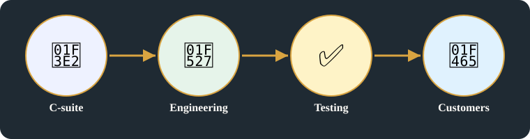
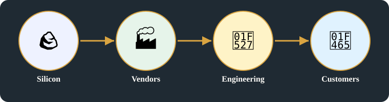

🏭 Industrial & Business Networks · Card E · 5 of 11
Building, operating and approving a product
Last: the product that uses all earlier layers, gated by approval.
Industrial & Business Networks — Last: the product that uses all earlier layers, gated by approval.
Original images +
Original headline(s) first (R15), exactly as written:
Product Dev
why needed
why needed / Comm to Business
Original spelling preserved. Enhanced headline on this page: Building, operating and approving a product [Added, labelled in batch1-cards.json] — it does not replace the original.
Original pages behind this card, untouched.
Product development, operations, FCC approval, vendorsWhy needed: speed of trade, business organisation, rulesWhy communication to business, regulation, global phone book
Detailed explanation

C-suite → Engineering → Testing → Customers — a product, in order, from the people who decide it to the people who use it.Cell tower, Ciudad del Carmen — the physical product a telecom company builds, operates, and gets approved. Image: Wikimedia Commons, CC BY-SA 4.0.
1. Building a product
Product development, C-suite, admin and deploy service, kernel, middle managers, engineering, operation development, marketing: a telecom product is developed by a company’s executives, managers, engineers, operations teams, and marketers, from kernel-level work to deployment and sale.
Supervisors handle projects, team lead, testing, RF exposure limits, tower siting: a telecom company’s supervisors and team leads handle projects and testing, including RF exposure limits and where a tower is sited, before a networkproduct goes live.
Employees and workers, technology and engine, customers, switches, routers, network: a company’s workers build and run the technology — switches, routers, and the network itself — that its customers use.
Figure 1 — C-suite and operations → engineering and testing → customers.
2. Vendors, silicon, customers
FCC, customers, vendors, silicon, Intel, Broadcom, Nvidia: a product’s chain runs from silicon vendors such as Intel, Broadcom, and Nvidia, through vendors and companies, to customers, under FCC rules.
A product is built by engineering and operations, tested, sold to customers, bought from vendors who buy silicon.
FCC approval: equipment certification (routers and phones must be certified) and broadband speed report — a telecom company cannot sell a router or phone, or claim a broadband speed, until the regulator has approved it.
A product cannot enter the market until approval is granted: a company, a vendor, and a telecom operator must all wait for the approvalgate before customers can buy and use the product.
Business organisation and five rule layers, applied here to running a product, not just to owning a business.
Regulation, coordination, trust and security, global phone book, regional / area codes, applied here to market entry.
That approval gate is why this card comes last — it depends on every card before it, from origins to naming to the NIC stack.
Figure 3 — FCC approval gate between vendors / silicon and the market, marked as a gate, not a step.
4. [Added] — R14 distinction, not one hierarchy
Approval is not the same as standards or allocation:FCCapproval (and TRAI, nationally) decides whether a product may enter a market. IETF and IEEE set the technical and hardware standards the product is built to. ICANN and RIRs allocate the names and number resources the product uses. A product must pass all three kinds, and passing one does not pass the others.
Summary:
A product closes the loop: built, tested, sold, bought through vendors and silicon — a company builds it, tests it, sells it to customers, and buys it back through vendors who buy silicon from chip suppliers.
It cannot enter the market until approval is granted: no matter how well a product is built and tested, it stays out of customers’ hands until the regulator’s approvalgate opens.
That gate depends on every card before it:approval depends on origins, naming and regulation, hardware supply, and the NIC stack — a product cannot be approved in isolation from the network it will join.

Second illustration — Silicon → Vendors → Engineering → Customers: the product chain in §2, in circle style.
FCC approval: equipment certification (routers / phones must), broadband speed report, as written on the page.
Business organisation and five rule layers, as in Card A, applied here to running a product, not just to owning a business.
Regulation, coordination, trust and security, global phone book, regional / area codes, as in Card A, applied here to market entry.
Key points above are the original points for this card. Original images are in the section above, untouched.
Horizontal links
Flow chart — Card E in the centre, with its links flowing out to the cards that use it.
FCC approval → Card B and Card C, as a cross-domain link, because approval depends on regulation in Card B and on hardware in Card C.
Vendors to silicon → Card C, as a successor, because the product chain here follows the silicon-to-vendor chain in Card C.
Business and trading speed → Card A, as a cross-domain link, because a product is built and approved to serve the business and trading speed that Card A explains.
Example: ARPANET, March 1977 — universities and research labs linked over a packet network, the ancestor of the Internet. Image: Wikimedia Commons, public domain — ARPANET logical map, March 1977.
Example: an Intel PRO/1000 PT dual-port NIC — a server or telecom switch plugs this card in, and that card is its endpoint on the network. Image: Wikimedia Commons, CC BY-SA 4.0 — Intel PRO/1000 PT Dual GigE.